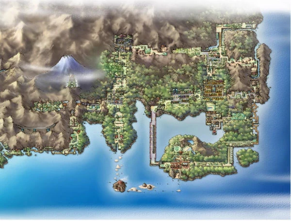

Канто (яп. カントー地方 канто: тихо:), представленный в Red и Green (Red и Blue в международном релизе), а затем и в Yellow, Gold, Silver, Crystal, FireRed, LeafGreen HeartGold и SoulSilver, был первым регионом франчайза Покемон. Регион соединён с Джото, поэтому игрок может посетить его на поезде или на лодке в Gold, Silver, Crystal, HeartGold и SoulSilver. Однако в этих играх регион отличается от классического Канто, представленного в Red и Blue, так как по сюжету, со времени событий Red и Blue прошло три года.
Географическая местность вселенной «Покемона» делится на так называемые регионы. В каждом регионе есть свои восемь стадионов, где можно заработать значки, и своя Лига покемонов. Основными регионами вселенной являются Канто, Джото, Хоэнн, Синно, Юнова, Калос, Алола и Галар. Каждое из семи поколений основной серии посвящено новому региону. Помимо этого, в игре Pokémon FireRed и LeafGreen и в одном эпизоде «Хроник покемонов» есть регион Острова Севии.
Для перехода на первую страницу нажмите на картинку©Авдейчик Г.И.